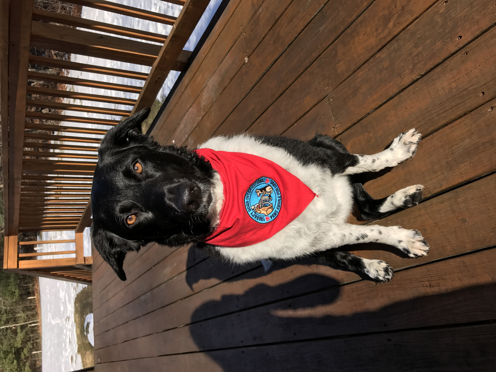

It's been a long time since I've done a group mailing and I hope you are well and have felt or feeling blessings during this unusual time of COVID.
I have recently become certified as an End of Life Doula for people. This dovetails into my hospice work. I will begin teaching online courses on the end of life for animals through The International Doula Life Movement in 2022. If you'd like information on what a doula does, or about my course, please let me know.
I love my diversified practice and am here to help you and your animals with a variety of imbalances both physically, emotionally, mentally and spiritually. Here's a brief list of what my work entails.
- Intuitively understanding the cause of behavior issues with animals.
I love finding the core of a situation and how this relates to their person. There are deep feelings inside of us that can benefit with awareness and healing that our animals are teaching us. - Healing work through Reiki, QiGong, TongRen, Ho'oponopono and Spirit guidance.
- Helping both people and their animals at the last chapter of life.
To know and understand in your heart when and what your animal needs, getting the whole family involved, and walking step by step with your beloved animal till life's end. - I offer bereavement groups and individual sessions after the death of an animal.
- And strictly for the human, soul retrievals, which releases old patterns allowing us a greater sense of freedom within.
One of the things I love about this treatment is that the person feels a difference right away!
If you'd like more information, please call or write! I'd love to hear from you. If you do not want to receive future mailings from me, please respond and I will remove you from my list.
|  |  |